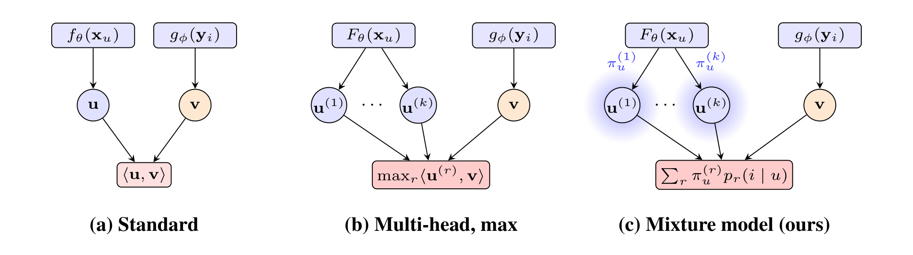
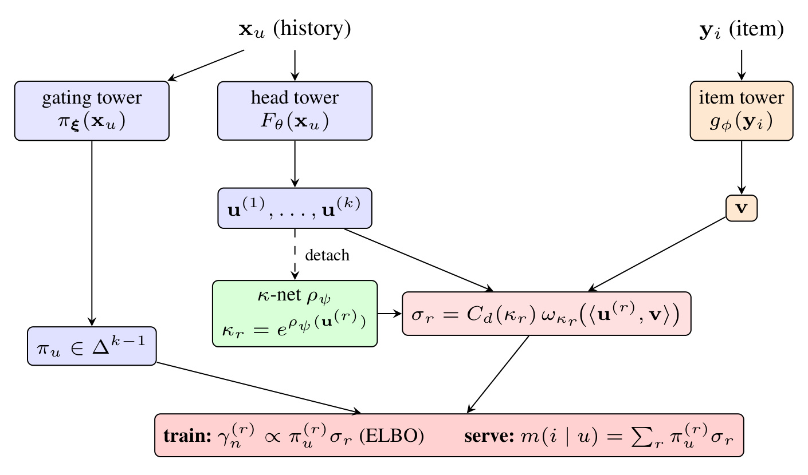
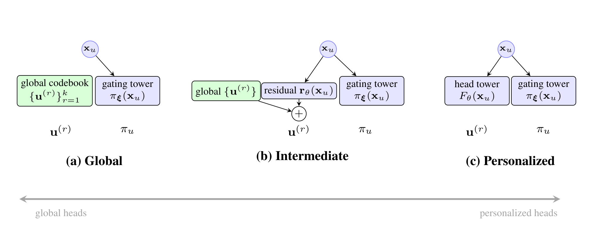
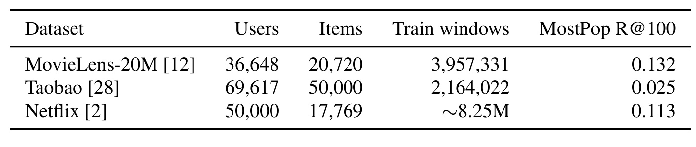
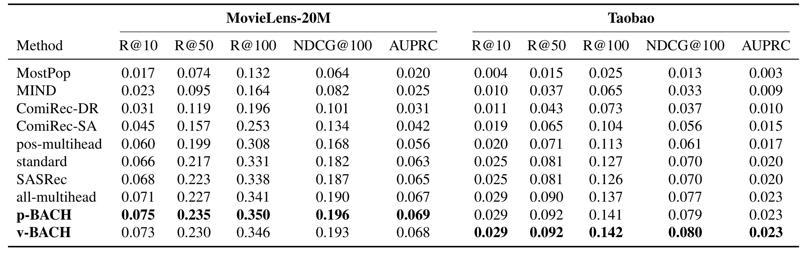
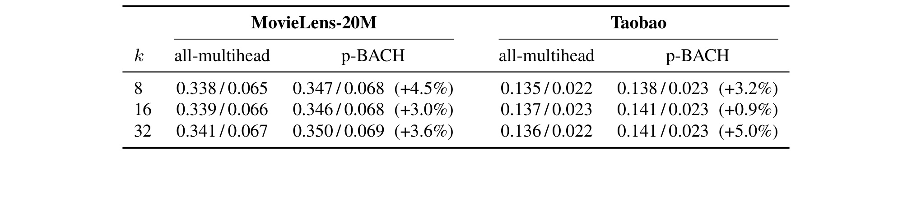
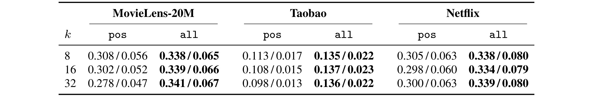
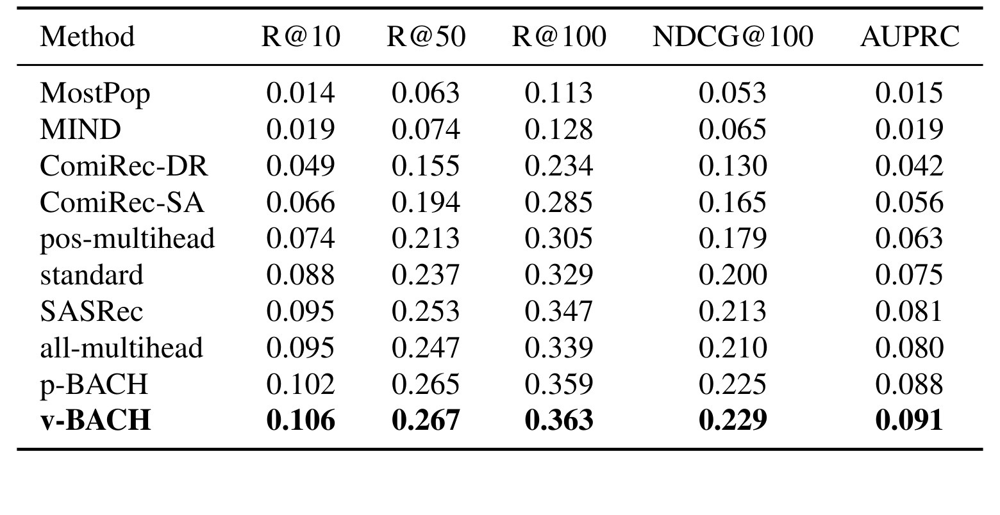

BACH：用贝叶斯混合软路由训练多兴趣双塔召回
BACH 的全名是 A Bayesian Admixture of Contrastive Heads for Multi-Interest Two-Tower Retrieval，由 Quoc Phong Nguyen、Paul Albert、Long Vuong、Vuong Le 和 Julien Monteil 完成，一作与其余作者的机构均为 Amazon。论文于 2026 年 7 月 9 日公开，唯一入口为 arXiv:2607.08107。截至本轮核验，摘要页和论文正文没有给出独立项目页或代码仓库，因此开源实现状态记为未核验到。它关注的不是多兴趣提取器如何做得更复杂，而是一个更靠近训练目标与在线召回接口的问题：多个用户兴趣向量究竟应怎样获得梯度、怎样表达各自的重要性，并把同一套概率语义带到服务阶段。
单一用户向量难以同时贴近多个弱相关兴趣；现有多兴趣模型虽然输出多个 head，却常以正样本选择唯一获胜 head，较弱 head 因长期缺少梯度而进一步失活，而且服务阶段也没有每用户的兴趣重要性估计。结果是模型名义上拥有多个兴趣向量，实际容量和合并规则都可能仍被少数主导兴趣控制。
1. 背景和问题
工业召回常用双塔：用户塔把历史、上下文等特征编码成向量 (u)，物品塔把候选编码成向量 (v_i)，二者以内积打分。训练用观测到的正样本和批内或随机负样本做 sampled softmax，服务时则预先计算全部物品向量并建立 ANN 索引，在线只计算用户向量。这个分解之所以长期有效，是因为用户侧计算和大目录检索被清楚地拆开了；但同一个优点也构成表示瓶颈。一个同时喜欢科幻电影、烘焙器具和古典音乐的用户被压缩成一个点时，三个弱相关区域都要靠近该点。优化通常优先照顾交互更频繁、梯度更稳定的主兴趣，较小兴趣难以同时保持足够高的近邻排名。最终问题不只是“向量表达力不够”，还会表现为召回头部被主兴趣占据、长尾兴趣虽然存在却进不了候选集。
多兴趣双塔把用户塔输出改为 (k) 个向量 (u^{(1)},\ldots,u^{(k)})，物品仍只有一个向量。经典服务规则取 (\max_r\langle u^{(r)},v_i\rangle)：每个候选由最匹配的兴趣 head 决定得分，再合并各 head 的近邻。MIND、ComiRec、MaxMF 以及信息检索里的多向量 late interaction 都体现了这个思路。问题出在常用的正样本硬路由训练：先找与当前正物品最接近的 head，只让该 head 对正样本和负样本计算损失。早期略占优势的 head 更容易被选中，得到更多更新后又更容易继续获胜；其他 head 更新频率降低，最后可能收敛为相似方向或完全闲置。这就是论文所说的 routing collapse。它让“输出 (k) 个向量”的结构容量与真正被训练、被使用的有效容量分离。
第二个缺口是 head importance。现有 max 规则把多个 head 对称地对待，只问某个候选在哪个 head 下分数最高，却不问该用户的下一次交互有多大概率来自这个兴趣。如果一个 head 代表用户偶尔出现的兴趣，另一个代表长期主兴趣，两者在 union 或 max 合并中仍隐含相同先验。更尖锐的 head、处于物品稠密区的 head 可能在合并后过度曝光，而不是因为用户真正给它更大概率质量。论文因此希望同时学出一个位于 (k) 维单纯形上的 (\pi_u)：每个分量既是训练时潜在兴趣成分的先验，也是服务时重新加权每个 head 的用户特定权重。

Figure 1 把三种形式放在同一接口上。左侧标准双塔只有一个用户向量和一个物品向量；中间多头模型虽然产生 (k) 个用户向量，但物品得分是 hard max，训练梯度沿 argmax 路径回传；右侧 BACH 仍保留用户多 head 与单物品向量的双塔可服务结构，却在 head 上建立带权混合，每个 head 定义一个分量 (p_r(i\mid u))，上方的 (\pi_u^{(r)}) 表示该用户对第 (r) 个兴趣的先验质量。区别并非简单把 max 换成平均，而是让正样本对所有 head 产生软责任度，并让混合权重在训练和服务两端复用。
论文还指出一个容易被忽略的对照：即使暂时不引入 BACH，传统正样本路由也没有匹配真实服务。训练时负样本都由“正样本选中的 head”打分；服务时每个候选却会选择自己的最佳 head。作者构造 all-multihead 基线，让正负候选各自取最大 head 后进入 sampled softmax，从而保持 train/serve scoring 一致。这个基线仍然是不可微的 hard max，也没有 (\pi_u)，但它能把“训练路由位置是否合理”和“贝叶斯混合是否有效”拆开验证。BACH 因而面对的是两层改进：先证明 per-candidate max 比 positive-only max 更合理，再证明 soft variational mixture 在更强的 serving-consistent hard baseline 之上仍有收益。
从推荐系统链路看，这个问题位于候选生成而非重排。多样性重排如 MMR 或 DPP 可以在已有候选上压低冗余，但若某个小兴趣的物品根本没有进入候选集，重排无法补回。BACH 试图在召回模型内部让多个兴趣方向都获得训练信号，并用用户特定的 (\pi_u) 分配候选质量。因此它的价值要看三件事是否同时成立：软路由是否真的改善检索指标，混合权重能否以可实现的方式带到 ANN 服务，以及额外的 gating 与 concentration 机制是否值得其系统成本。论文的后续方法与实验正围绕这三点展开。
2. 方法
2.1 从硬路由多兴趣双塔到每用户 softmax 混合
论文先给出一个强于传统正样本路由的 hard baseline。对第 (n) 个训练样本，候选集为 (C_n)，每个候选物品 (j) 都独立选择使内积最大的 head，再进入 sampled softmax：
符号解释：(B) 是批大小，(i_n) 是正物品，(C_n) 包含批内物品与随机负样本，(u_n^{(r)}) 是用户第 (r) 个兴趣 head，(v_j) 是物品向量，(\tau) 为固定温度。与 positive-only routing 的关键差别是：分母里的每个负样本也选择自己的最佳 head，而不是沿用正样本选出的 head。它与线上 max-over-heads 排序一致，并让某个 head 即使没有赢得正样本，也可能因赢得某些负样本而收到梯度；但 max 仍使每个候选只有一个 head 获得直接信号。
BACH 的核心改写是把“选择哪个 head”从确定性路由变成离散潜变量，并把每用户的 head 重要性显式写成混合先验。 对每条交互引入 (z_n\in{1,\ldots,k})，生成模型为：
符号解释：(\pi_{u_n}^{(r)}\ge 0) 且 (\sum_r\pi_{u_n}^{(r)}=1)，表示用户 (u_n) 的下一项交互由兴趣 (r) 解释的先验概率；(p_r) 是第 (r) 个 head 对全物品目录定义的 softmax 分量；(\mathcal I) 是完整目录。该表达不是把 head 分数做简单加权，而是在概率空间混合多个条件分布。训练目标是观测物品的边缘对数似然 (\log\sum_r\pi_r p_r)，它把“某个兴趣是否常出现”和“该兴趣下物品是否匹配”分开建模。
直接优化 log-of-sum 会把所有 head 和各自 normalizer 耦合在一起。论文为每个样本引入变分责任度 (\gamma_n^{(r)})，利用 Jensen 不等式得到：
符号解释：(\gamma_n) 同样位于 (k) 维单纯形，表示识别模型对潜在兴趣的后验近似；右侧是单样本 ELBO。若 (\gamma_n) 等于真实的 contrastive posterior，界会取等号；BACH 有意限制 (\gamma_n) 为不依赖负样本集合的球面识别族，因此界一般不紧。这个选择牺牲了对当前 sampled-softmax 后验的完全拟合，换取了负采样不变性和可在服务阶段复用的责任度语义。
2.2 球面识别后验、三塔结构与自正则浓度
为避免真实 posterior 依赖候选集 (C_n)，BACH 将 L2 归一化后的 head 视为单位球面上的均值方向，用正物品与 head 的余弦对齐定义球面密度：
符号解释：(C_d(\kappa_r)) 是 (d) 维球面密度的归一化常数，(\kappa_r>0) 是浓度，控制第 (r) 个兴趣簇围绕 head 方向的尖锐程度；第一种核对应 power-spherical 的 p-BACH，第二种对应 von Mises-Fisher 的 v-BACH。power-spherical 的常数可用 Gamma 函数比值计算，不需要 vMF 中的修正 Bessel 函数。二者共享同一训练推导，实验差异主要反映识别核而非整体模型变化。
责任度把用户先验与正样本的球面对齐合并：
符号解释：分子要求第 (r) 个兴趣既对用户有较大先验质量，又能在球面上解释当前正物品；分母对所有 head 归一化。与 argmax 相比，只要 (\gamma_n^{(r)}) 非零，head 就会参与目标；与均匀 soft routing 相比，(\pi_u) 能让不同用户对同一组 head 给出不同偏好。这一 posterior 只看正物品的对齐，不读取负样本集合，因此更换负采样器不会直接改变其定义。
完整 ELBO 写成 reconstruction、prior 与 entropy 三部分：
符号解释：reconstruction 项用责任度加权各 head 的对比似然，直接训练 head tower 与 item tower；prior 项拟合 gating tower 产生的 (\pi_u)；entropy 项与前两项共同推动识别 posterior 接近 contrastive posterior。训练对 (\gamma) 完整求导，不把它当作 stop-gradient 伪标签；由于潜变量只有 (k) 个状态，期望可精确求和，不需要 Monte Carlo 重参数化。对应的嵌入重建损失为
符号解释：(\theta) 是多 head 用户塔参数，(\phi) 是物品塔参数。每个 head 的梯度大小由 (\gamma_n^{(r)}) 缩放，因而“较弱 head 完全不更新”的硬断点被连续权重替代。这里也存在边界：若 posterior 已极尖锐，非获胜 head 的 (\gamma) 仍可能非常小；软路由缓解而非数学上消灭 collapse。

Figure 4 展示了参数流。用户历史同时进入彼此独立的 gating tower (\pi_\xi(x_u)) 和 head tower (F_\theta(x_u))：前者输出单纯形权重 (\pi_u)，后者输出 (k) 个兴趣方向。物品塔 (g_\phi(y_i)) 输出单个 (v_i)。小型 concentration network (\rho_\psi) 接收 detached head，令 (\kappa_r=\exp(\rho_\psi(u^{(r)})))；detach 避免浓度网络为了调节锐度反向扭曲 head 方向。训练端用 (\gamma_n^{(r)}\propto\pi_u^{(r)}\sigma_r) 进入 ELBO，服务端则复用相同的 (\pi_u)、(\kappa_r) 与球面核计算混合密度。图中两条底部路径说明 BACH 并非训练时用一套 posterior、线上再临时发明合并策略。
论文用 recognition gap 解释浓度为何无需显式先验：
符号解释：(\ell) 是生成混合的边缘对数似然，(\gamma_n^{\mathrm{con}}\propto\pi_u^{(r)}p_r(i_n\mid u_n)) 是紧的 contrastive posterior。边缘似然本身不含 (\kappa_r)，浓度只通过 KL 间隙进入目标；最大化 ELBO 会让球面 posterior 的锐度去逼近 contrastive posterior，而不是无限变平或无限变尖。作者因此不对 (\kappa) 加 prior 或 clip，并在实验中检查其最大值是否保持有界。不过这一论证保证的是目标中的自正则结构，不等价于跨数据集都能得到完美校准的 (\pi_u) 或 (\kappa)。
2.3 训练—服务一致的混合密度与全局 codebook
服务阶段没有 sampled-softmax 候选集，BACH 直接按识别族对应的自归一化球面混合密度排序：
符号解释：每个 head 对候选的贡献由用户权重 (\pi_u^{(r)})、浓度归一化常数和单调的相似度核共同决定。因为 (\omega_\kappa(t)) 随内积单调增加，系统可以先对每个 head 做 MIPS，取前 (M) 个候选形成并集，再在并集上用精确 (m(i\mid u)) 重排。它不是一个单内积，因而不能直接用一次标准 ANN 得到精确全目录 TopK；候选深度 (M) 与 head 数 (k) 会影响召回近似和在线成本，这是部署时需要重新测量的系统量。
BACH 还把“兴趣是什么”和“每个兴趣对该用户有多重要”拆成两类参数。个性化端由 (F_\theta(x_u)) 在线生成每用户 head；全局端则学习一组所有用户共享的 prototypes (u^{(r)})，只有 gating tower 的 (\pi_u) 依用户变化。全局 codebook 下，每个 prototype 的候选列表及内积分数都可离线预计算，在线只预测 (\pi_u) 并重新加权缓存列表，避免每用户发起 (k) 次 ANN 查询。它也使 prototype 可检查、(\pi_u) 可解释，并允许运营约束某些兴趣的曝光；冷启动用户只需从特征预测单纯形权重。

Figure 5 把这一取舍画成三个端点。左侧 global 模式中，head 完全不依赖 (x_u)，只有 gating tower 个性化；右侧 personalized 模式中，head tower 与 gating tower 都读取用户历史。中间方案在全局 prototype 上叠加一个较小的用户 residual，试图保留预计算主体并恢复部分用户适应性。三种结构可共享同一个 ELBO，改变的是 head 参数化和服务代价。值得注意的是，论文只实证了全局与个性化两端，中间 residual 仍属于未来工作；因此不能把图中的连续谱理解成已有完整 accuracy-latency 曲线。
BACH 的服务一致性有条件：训练责任度不依赖负样本并与球面混合服务分数一致，但实际 ANN 仍先做每 head 候选截断，再对并集精排。若 (M) 太小或低权重 head 的优质候选在截断前被漏掉，理论上的全目录混合排序不会被完整实现。 这也是论文“可部署”主张与“已证明线上收益”之间需要区分的地方：模型给出了合理的两阶段服务方法和全局预计算变体，却没有报告真实在线延迟、索引流量、候选并集大小或线上 A/B。
3. 实验结果
3.1 数据、模型与评测口径
实验采用 MovieLens-20M、Taobao UserBehavior 和 Netflix Prize 三个序列推荐基准。MovieLens 与 Netflix 只保留评分不低于 4 的 liked 交互，Taobao 保留 pv、cart、fav、buy 等全部行为；物品按首次交互去重并按时间排序。目录最多截到最频繁的 50,000 个物品，用户至少要有 80 次 liked 交互。每个用户最后 20 个物品分成 10 个验证和 10 个测试目标，训练以前 50 个历史物品预测随后 10 个位置，并使用 stride-1 窗口。测试对完整目录打分，排除历史物品，最多评测 10,000 个留出用户。这比只对少量采样负例评测更接近召回场景，但三个公开基准的反馈语义和稀疏度差异仍然很大。

Table 1 显示 MovieLens-20M 有 36,648 个用户、20,720 个物品和约 396 万训练窗口；Taobao 有 69,617 个用户、截断后的 50,000 个物品和约 216 万窗口；Netflix 取 50,000 个用户、17,769 个物品与约 825 万窗口。MostPop 的 R@100 分别为 0.132、0.025、0.113，Taobao 的低值反映其更大目录和行为噪声。比较模型绝对指标时不能只看百分点：在 Taobao 上增加 0.004 的 R@100，相对 MostPop 已是明显变化；但这不自动等同于线上业务价值。
为控制模型差异，standard、pos/all-multihead 和 BACH 共享单层 CLS-token Transformer：嵌入维 64、4 个 attention heads、FFN 宽 128、dropout 0.1，多兴趣数 (k\in{8,16,32})。物品塔用 liked 矩阵的 PureSVD(64) 初始化并冻结主表，再加零初始化的 residual MLP。所有向量 L2 归一化，温度固定为 0.07。训练用 Adam、学习率 (10^{-3})、批大小 512，每批加入 2,048 个均匀随机负样本与批内正样本，按验证 AUPRC 早停，且只跑单 seed。MIND、ComiRec 与 SASRec 保留各自用户编码器；因此跨 extractor 比较包含编码器差异，而 BACH 对 all-multihead、pos 对 all 的比较才更接近受控因果证据。
指标包括 R@10、R@50、R@100、NDCG@100 与 AUPRC，均按用户宏平均。AUPRC 同时用于早停，强调头部排序；R@100 更关注深召回覆盖。BACH 按式 23 的 mixture density 排序，p-BACH 与 v-BACH 仅在球面识别核上不同。由于没有多 seed 均值和方差，小于 0.001 的 AUPRC 差异应被视作弱证据；论文也把 MovieLens 与 Taobao 上两种核的细小差别描述为可能落在 run-to-run noise 内。
3.2 MovieLens-20M 与 Taobao：主结果和同 head 数比较

Table 2 采用每个方法族按验证 AUPRC 选出的最佳 (k)。MovieLens 上 p-BACH 的 R@10、R@50、R@100、NDCG@100、AUPRC 分别为 0.075、0.235、0.350、0.196、0.069，五项均为表中最高；v-BACH 为 0.073、0.230、0.346、0.193、0.068。最强 hard baseline all-multihead 的 AUPRC 为 0.067，standard 与 SASRec 分别为 0.063 和 0.065。BACH 相对 all-multihead 的绝对提升不大，但集中在 R@10、NDCG 与 AUPRC 等头部指标，符合 (\pi_u) 主要调整不同 head 在榜首质量的机制预期。
Taobao 上 v-BACH 在五项指标达到 0.029、0.092、0.142、0.080、0.023，p-BACH 几乎相同；all-multihead 为 0.029、0.090、0.137、0.077、0.023。AUPRC 按三位小数显示后相同，因此“BACH 在所有指标最好”更依赖未四舍五入值；可见的优势主要在 R@50、R@100 和 NDCG@100。另一方面，MIND 和 ComiRec-DR 明显落后，作者报告 capsule routing 很早收敛到接近 popularity 的解。这个差距不能全部归因于 BACH，因为它们使用不同 extractor；更可信的拆分是：pos-multihead 与 ComiRec-SA 的差异反映 CLS Transformer 与自注意 pooling 的编码器效应，all-multihead 与 pos-multihead 反映路由位置，BACH 与 all-multihead 才反映变分混合目标。

Table 3 固定 (k=8,16,32)，只比较共享编码器与物品塔的 p-BACH 和 all-multihead。MovieLens 上 p-BACH 的 R@100/AUPRC 从 (k=8) 的 0.347/0.068 到 (k=32) 的 0.350/0.069，all-multihead 对应为 0.338/0.065 到 0.341/0.067；AUPRC 相对增益为 4.5%、3.0%、3.6%。Taobao 的相对增益为 3.2%、0.9%、5.0%。十二个数值单元中 p-BACH 全部胜出，说明收益不是 best-over-k 选择造成。不过增益幅度并非随 head 数单调上升，(k=16) 的 Taobao 提升尤其小，不能简单推导“兴趣越多，软路由越有价值”。
这个公平比较还支持一个更细的判断：BACH 主要改善榜首次序而不是大幅扩张深召回覆盖。MovieLens 的 AUPRC 相对提升约 3%-4.5%，R@100 绝对提升约 0.007-0.009；Taobao 在 (k=16) 时 R@100 从 0.137 到 0.141，但 AUPRC 只显示 0.023 到 0.023。若业务目标是进入粗排的总覆盖，需结合更大的 K 和候选并集深度重新评估；若目标更重视召回列表前部质量，现有结果更直接。论文没有报告兴趣覆盖率、head 利用率分布或 (\pi_u) 校准曲线，因此“routing collapse 被缓解”主要由最终指标和机制解释间接支撑，而不是由 head occupancy 的直接测量支撑。
3.3 路由消融：max 到底应放在哪里

Table 4 在同一 CLS encoder、物品塔、温度和数据上，只改变 hard max 的位置。MovieLens 的 pos-multihead 随 (k) 从 8 增到 32，R@100/AUPRC 由 0.308/0.056 降到 0.278/0.047；all-multihead 则维持在约 0.338-0.341/0.065-0.067。Taobao 上 pos 从 0.113/0.017 降到 0.098/0.013，all 保持 0.135-0.137/0.022-0.023。Netflix 也在全部 (k) 下由 all 获胜。论文汇总的差距为 R@100 约 9%-29%，R@10 与 AUPRC 约 13%-41%，并且 MovieLens、Taobao 的差距随 head 数严格扩大。
这项消融的重要性不低于 BACH 主表。positive-only 训练每步只更新正样本选中的一个 head，信号规模近似随 (1/k) 稀释；服务时负候选却可以切换到另一个最佳 head，形成评分规则偏移。all-multihead 让每个候选按线上同样的 max 规则选 head，某个 head 还可因负样本而得到训练信号。结果说明，若已有多兴趣召回系统仍采用 label-aware target routing，仅把它替换为 per-candidate max sampled softmax 就可能获得明显收益，不必先引入完整变分模型。反过来，这也让 BACH 的 0.9%-5.0% 相对 AUPRC 增益面对的是更强基线，主张更可信但工程性价比需要单独衡量。
3.4 Netflix、浓度稳定性与全局 codebook 取舍

Netflix 上 v-BACH 在 R@10、R@50、R@100、NDCG@100、AUPRC 分别达到 0.106、0.267、0.363、0.229、0.091，p-BACH 为 0.102、0.265、0.359、0.225、0.088；最强基线 SASRec 的对应值为 0.095、0.253、0.347、0.213、0.081，all-multihead 的 AUPRC 为 0.080。v-BACH 在 (k=32) 相对同 head 数 all-multihead 的 AUPRC 增益为 12.7%，幅度大于另两个数据集。p-BACH 的 AUPRC 随 (k) 从 0.083、0.086 到 0.088，v-BACH 从 0.084、0.085 到 0.091，支持多 head 与软责任度在该数据上的互补性。
浓度实验检验式 20 的自正则论证。所有运行都不加 (\kappa) prior 或 clipping，p-BACH 的最大浓度约在 20-30，v-BACH 约在 17-21，没有发散到极端。MovieLens 与 Taobao 上两种核的 AUPRC 差小于 0.001，Netflix 的 v-BACH 在 (k=32) 约领先 p-BACH 3%。这说明主要收益更可能来自变分混合结构，而非某一种特殊球面分布。但论文只报告最大浓度范围，没有展示每 head、每用户的分布、训练轨迹或校准误差；“有界”是必要证据，却还不足以证明 posterior 在概率意义上已良好校准。
全局 codebook 则清楚展示 accuracy-cost 交换。共享 prototypes 在 MovieLens 上取得 R@100/AUPRC 0.297/0.053，Taobao 为 0.102/0.015，Netflix 为 0.318/0.073，分别使用 128 或 256 个 prototypes。它们都显著超过 MostPop，但低于个性化 BACH；Netflix 上大致降到 single-vector baseline 水平。换来的收益是每 prototype 的候选列表可离线预计算，在线只预测 (\pi_u) 并加权缓存结果。论文没有给出实际延迟、吞吐、内存或索引成本，因此这部分更像经过离线质量验证的系统设计点，而不是完成端到端部署验收的效率结论。
整体证据链较完整：三数据集全目录评测支持主结论，同编码器的 head-matched 表隔离变分目标，routing ablation 隔离 max 位置，浓度范围对应自正则理论，全局 codebook 给出可预计算端点的质量。主要薄弱处也明确：所有实验单 seed；没有真实线上流量；没有直接 head utilization、兴趣覆盖、多样性或校准指标；没有对 per-head ANN 候选深度 (M) 做 recall-latency 扫描。因此结果足以证明 BACH 是有竞争力的离线召回目标，但尚不能断言它在所有工业目录上都以合理成本优于 serving-consistent hard baseline。
4. 总结
4.1 我的判断
BACH 最有价值的贡献不是“又一个多兴趣 extractor”，而是把三件通常分离的事放进同一概率对象：用 (\pi_u) 表达每用户兴趣先验，用球面 (\gamma) 给所有 head 分配软责任度，用同一个自归一化 mixture density 做服务排序。这样既解释了为什么 hard positive routing 会产生 winner-take-all，也避免训练时依赖负采样集合的 posterior 被直接搬到线上。更务实的发现是 all-multihead：把 max 从“只在正样本上取”改成“每个候选分别取”，就能获得远大于部分 BACH 增量的提升。对现有系统而言，这一基线应先被补齐，之后再决定 gating、concentration 和 mixture rescore 的额外复杂度是否值得。
论文的离线结果稳定覆盖三个数据集和全部 head 数，但绝对增益在 MovieLens、Taobao 上偏小，且所有运行只有单 seed。因而更准确的结论是：BACH 提供了一个机制自洽、在强受控基线上持续占优的目标函数；它还没有完成概率校准、在线多样性与 ANN 成本的系统级闭环。全局 codebook 的准确率下降也提醒我们，预计算不是免费午餐。实际选择可能不是 global 与 personalized 二选一，而是由少量共享 prototypes、个性化 residual 和受预算约束的候选合并共同构成。
4.2 局限、复现重点与后续跟进
至少有四项局限需要保留。第一，单 seed 且若干 AUPRC 差异小于 0.001，缺少方差使显著性难判断。第二，论文用最终检索指标间接说明 collapse 缓解，却未报告每 head 路由频率、有效 head 数、两两相似度或兴趣覆盖。第三，(\pi_u) 被称为 calibrated head importance，但没有可靠性图、Brier score 或按兴趣频率分桶的校准实验。第四，服务评估没有测量 per-head ANN 查询数、候选并集大小、重排耗时、索引带宽和不同 (M) 下的召回损失；global codebook 也只报告离线质量，没有实际预计算预算。另一个数据边界是三个基准都被处理成 liked 序列，Taobao 的多行为语义被合并，不能直接代表带显式负反馈、实时上下文或亿级目录的生产环境。
复现时应先做三层对照，而不是只复现最终 BACH。第一层严格共享用户 encoder、item tower、负采样器和温度，对比 positive-only 与 per-candidate max，确认训练服务一致性的收益；第二层在相同 (k) 下对比 all-multihead 与 p/v-BACH，并记录多 seed 方差；第三层同时记录准确率与系统量，包括每 head top-(M)、并集去重率、精排延迟、索引 QPS 和缓存命中。训练日志还应增加 (\pi_u) 熵、(\kappa) 分位数、head utilization、head 两两余弦相似度和每 head 正负样本梯度范数，否则很难判断收益究竟来自软路由、正则效应还是额外网络容量。
后续最值得跟进三条。其一，实证 Figure 5 的 intermediate 方案：共享 codebook 加小型个性化 residual，画出真实 accuracy-latency 曲线，验证是否存在优于两端的折中点。其二，为 (\pi_u) 加入校准评测与可控曝光实验，检查调节某个 mixture weight 是否真能稳定改变对应兴趣的召回占比，而非只改变密度尺度。其三，把训练目标与 ANN 近似联合评估，扫描 (k)、(M)、目录规模和兴趣长尾程度，观察理论全目录 mixture TopK 在候选截断后保留多少。若这三项成立，BACH 才能从“离线目标函数更优”进一步成为可解释、可控且有明确服务预算的多兴趣召回方案。